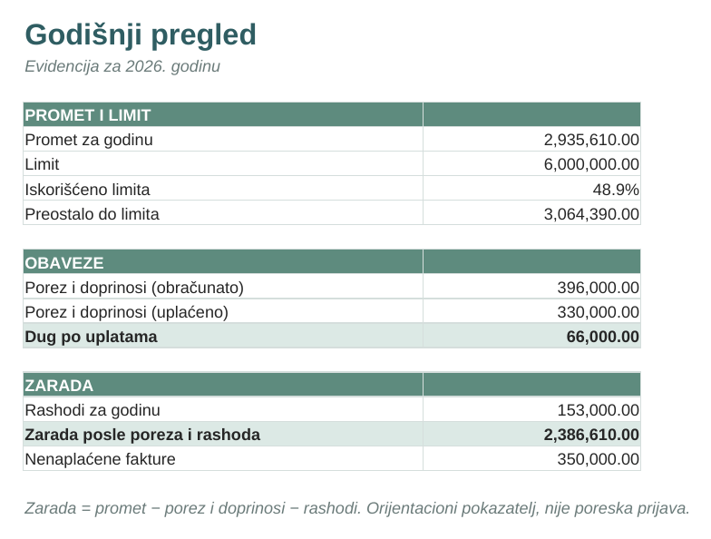
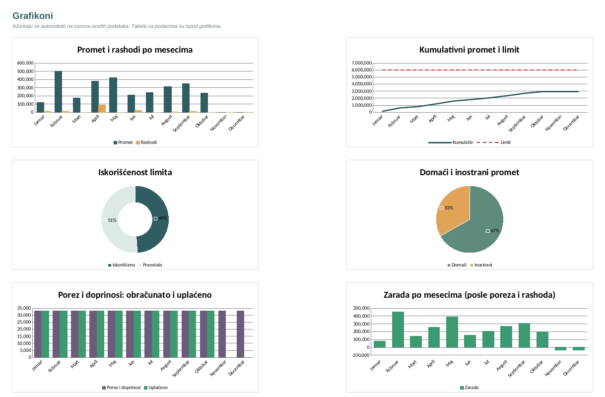
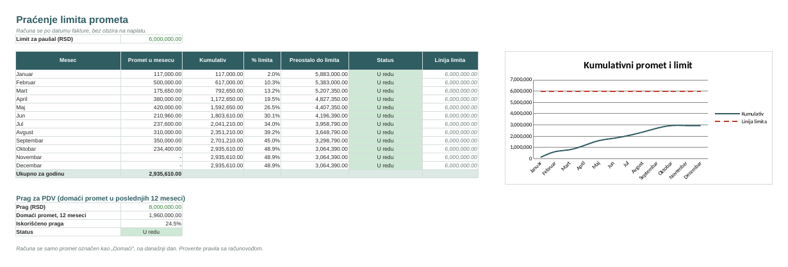
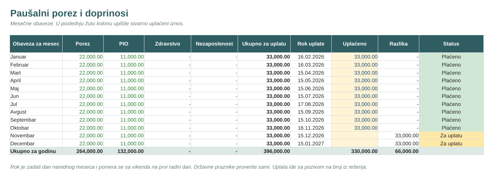

Besplatna Excel evidencija prometa za paušalce
Pratite promet, limit, porez i doprinose na jednom mestu. Preuzmite fajl, otvorite ga u Excelu i unosite samo žuta polja, ostalo se računa samo.
Bez registracije i bez e-pošte. Podaci ostaju na vašem računaru.
- 8 listova
- 8 grafikona
- Bez makroa
- Excel i LibreOffice

Šta dobijate
Praćenje limita
Promet po mesecima i kumulativno, procenat iskorišćenosti limita i upozorenje kada mu se približite.
Prag za PDV
Posebno prati domaći promet u poslednjih 12 meseci u odnosu na prag za ulazak u sistem PDV-a.
Devizne fakture
Unesete valutu, iznos i kurs NBS, a iznos u dinarima se računa sam. Red bez kursa se označava crveno.
Porez i doprinosi
Raspored mesečnih uplata sa rokom (pomera se sa vikenda) i statusom: plaćeno, za uplatu ili kasni.
Grafikoni
Osam grafikona koji se sami ažuriraju: promet, limit, porez, rashodi, naplata i zarada.
Rashodi i zarada
Opciono unesite rashode i vidite stvarnu zaradu posle poreza i doprinosa.
Kako izgleda



Na slikama su izmišljeni podaci. Fajl koji preuzimate je prazan i spreman za vaše unose.
Kako se koristi
- 1
Preuzmite i otvorite
Fajl radi u Excelu i LibreOffice-u, bez makroa i dodataka.
- 2
Podesite parametre
Na listu „Parametri“ upišite godinu, limit i mesečne iznose iz rešenja Poreske uprave.
- 3
Unosite fakture
Na listu „Prihodi“ popunjavajte samo žuta polja. Limit, porez i grafikoni se računaju sami.
Česta pitanja
Da li je zaista besplatno?
Da. Nema cene, registracije ni ostavljanja e-pošte.
Da li zamenjuje računovođu?
Ne. Ovo je alat za evidenciju, a ne poreska prijava niti savet. Limit, iznosi i rokovi su parametri koje sami unosite, a važeće vrednosti proverite u Poreskoj upravi ili kod računovođe.
Gde se čuvaju moji podaci?
Samo u vašem fajlu na vašem računaru. Ovaj sajt ne vidi šta unosite.
Za koga je namenjen?
Za preduzetnike na paušalnom oporezivanju. Ako vodite poslovne knjige (knjigaš), ovo nije dovoljno.
Da li radi u Google Sheets-u?
Fajl je testiran u LibreOffice-u i napravljen za Excel. U Google Sheets-u nije testiran, pa se neki grafikoni i formatiranje mogu razlikovati.
Na kom jeziku je fajl?
Na srpskom (latinica). Uputstvo je na prvom listu.
Isprobajte besplatno
Preuzmite prazan fajl i počnite da unosite promet već danas.